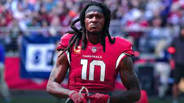

1. Davante Adams
Link : H/L video of Davante Adams
| Year | Team | Games | Receiving | Fumbles | ||||||
|---|---|---|---|---|---|---|---|---|---|---|
| GP | GS | Rec | Yds | Avg | Lng | TD | Fum | Lost | ||
| 2017 | GB | 14 | 14 | 74 | 885 | 12.0 | 55 | 10 | 0 | 0 |
| 2018 | GB | 15 | 15 | 111 | 1,386 | 12.5 | 57 | 13 | 0 | 0 |
| 2019 | GB | 12 | 12 | 83 | 997 | 12.0 | 58 | 5 | 2 | 1 |
| 2020 | GB | 14 | 14 | 115 | 1,374 | 11.9 | 56T | 18 | 1 | 1 |
| Total | 100 | 93 | 546 | 6,568 | 12.0 | 66T | 62 | 5 | 3 | |
2. Stefon Diggs
Link : H/L video of Stefon Diggs
| Year | Team | Games | Receiving | Rushing | Fumbles | ||||||||||
|---|---|---|---|---|---|---|---|---|---|---|---|---|---|---|---|
| 2017 | MIN | 14 | 14 | 64 | 849 | 12.4 | 59 | 8 | 8 | 13 | 1.6 | 9 | 0 | 0 | 0 |
| 2018 | MIN | 15 | 14 | 102 | 1,021 | 10.0 | 75T | 9 | 10 | 62 | 6.2 | 20 | 0 | 0 | 0 |
| 2019 | MIN | 15 | 15 | 63 | 1,093 | 17.9 | 66 | 6 | 5 | 61 | 12.2 | 27 | 0 | 4 | 3 |
| 2020 | BUF | 16 | 16 | 127 | 1,535 | 12.1 | 55 | 8 | 1 | 1 | 1.0 | 1 | 0 | 0 | 0 |
| Total | 86 | 79 | 492 | 6,158 | 12.5 | 75T | 38 | 30 | 160 | 5.3 | 27 | 0 | 6 | 3 | |
3. Tyreek Hill
Link : H/L video of Tyreek Hill
| Year | Team | Games | Receiving | Rushing | Returning | Fumbles | ||||||||||||||
|---|---|---|---|---|---|---|---|---|---|---|---|---|---|---|---|---|---|---|---|---|
| GP | GS | Rec | Yds | Avg | Lng | TD | Att | Yds | Avg | Lng | TD | Ret | Yds | Avg | Lng | TD | Fum | Lost | ||
| 2017 | KC | 15 | 13 | 75 | 1,183 | 15.8 | 79T | 7 | 17 | 59 | 3.5 | 16 | 0 | 25 | 204 | 8.2 | 82T | 1 | 2 | 0 |
| 2018 | KC | 16 | 16 | 87 | 1,479 | 17.0 | 75T | 12 | 22 | 151 | 6.8 | 33 | 1 | 20 | 213 | 10.7 | 91T | 1 | 0 | 0 |
| 2019 | KC | 12 | 12 | 58 | 860 | 14.8 | 57T | 7 | 8 | 23 | 2.9 | 5 | 0 | 1 | 0 | 0.0 | 0 | 0 | 0 | 0 |
| 2020 | KC | 15 | 15 | 87 | 1,276 | 14.7 | 75T | 15 | 13 | 123 | 9.5 | 32T | 2 | 1 | 0 | 0.0 | 0 | 0 | 1 | 0 |
| Career | 74 | 57 | 368 | 5,391 | 14.6 | 79T | 47 | 84 | 623 | 7.4 | 70T | 5 | 100 | 1,393 | 13.9 | 95T | 5 | 7 | 1 | |

Link : H/L video of DeAndre Hopkins
4. DeAndre Hopkins
Link : H/L video of DeAndre Hopkins
| Year | Team | Games | Receiving | Rushing | Fumbles | ||||||||||
|---|---|---|---|---|---|---|---|---|---|---|---|---|---|---|---|
| GP | GS | Rec | Yds | Avg | Lng | TD | Att | Yds | Avg | Lng | TD | Fum | Lost | ||
| 2017 | HOU | 15 | 15 | 96 | 1,378 | 14.4 | 72T | 13 | — | — | — | — | — | 1 | 1 |
| 2018 | HOU | 16 | 16 | 115 | 1,572 | 13.7 | 49T | 11 | 1 | 0 | 0.0 | 0 | 0 | 2 | 2 |
| 2019 | HOU | 15 | 15 | 104 | 1,165 | 11.2 | 43T | 7 | 2 | 18 | 9.0 | 12 | 0 | 0 | 0 |
| 2020 | ARI | 16 | 16 | 115 | 1,407 | 12.2 | 60 | 6 | 1 | 1 | 1.0 | 1 | 0 | 3 | 2 |
| Career | 126 | 126 | 747 | 10,009 | 13.4 | 76T | 60 | 4 | 19 | 4.8 | 12 | 0 | 10 | 7 | |
5. DK Metcalf
Link : H/L video of DK Metcalf
| Year | Team | Games | Receiving | Rushing | Fumbles | ||||||||||
|---|---|---|---|---|---|---|---|---|---|---|---|---|---|---|---|
| GP | GS | Rec | Yds | Avg | Lng | TD | Att | Yds | Avg | Lng | TD | Fum | Lost | ||
| 2019 | SEA | 16 | 15 | 58 | 900 | 15.5 | 54 | 7 | 2 | 11 | 5.5 | 7 | 0 | 3 | 3 |
| 2020 | SEA | 16 | 16 | 83 | 1,303 | 15.7 | 62 | 10 | – | – | – | – | 0 | 1 | 1 |
| Career | 32 | 31 | 141 | 2,203 | 15.6 | 62 | 17 | 2 | 11 | 5.5 | 7 | 0 | 4 | 4 | |